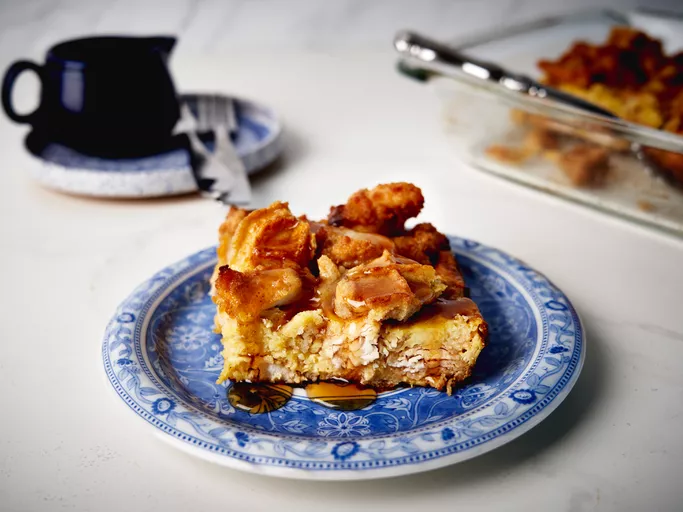

Chicken and Waffles Casserole

Description
This chicken and waffles casserole is a great way to change up the brunch casserole. It has all the sweet and savory notes you love from chicken and waffles. Using chicken nuggets and frozen waffles makes it super easy to put together.
Ingredients
Note: These are the ingredients:
- 6 frozen Belgian waffles
- 1 1/2 pounds frozen chicken nuggets
- 8 large eggs
- 1 1/3 cups half-and-half
- 2 tablespoons maple syrup, plus more for serving
- 1/2 teaspoon kosher salt/li>
- 1/8 teaspoon cayenne pepper
- 4 tablespoons butter, melted
Steps
- Step 1 Preheat the oven to 350 degrees F (175 degrees C). Lightly grease a 9x13-inch baking dish. Arrange waffles on a baking sheet.
- Step 2 Bake in the preheated oven until lightly toasted on each side, about 4 minutes per side. Remove; cut each waffle into 8 pieces. and arrange waffles in the prepared baking dish.
- Step 3 Cut larger chicken nuggets in half, leaving smaller pieces whole, and arrange chicken pieces among the waffles.
- Step 4 Whisk together eggs, half-and-half, 2 tablespoons maple syrup, salt, and cayenne pepper in a large bowl until well combined and slightly frothy. Pour egg mixture over waffles and chicken; cover and let stand 15 minutes to soak before baking.
- Step 5 Bake until eggs are set and top is golden brown, about 1 hour, uncovering halfway through baking time. Let stand 5 to 10 minutes before serving. Drizzle with melted butter and syrup.
Enjoy!
fast chicken recipe.